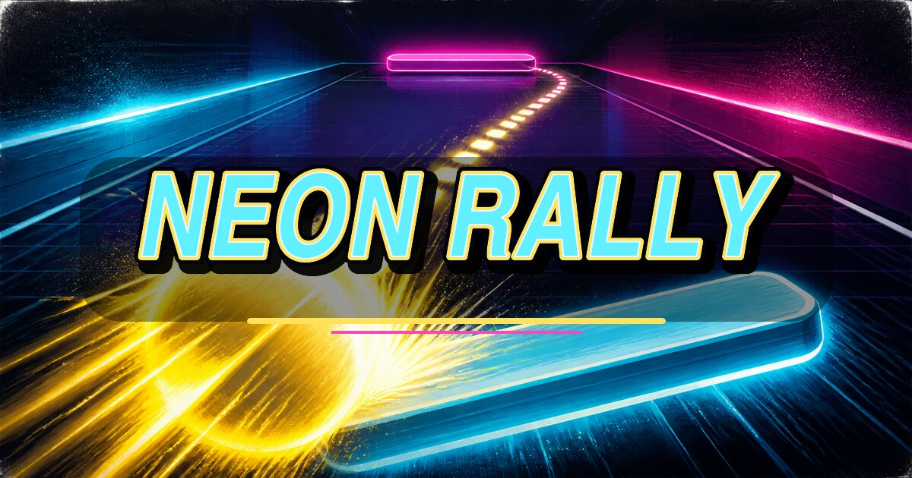

CPU0
RALLY0
TU0
PRONTO
Trascina il dito orizzontalmente per muovere la racchetta. Primo a 7 punti.
RETROWEBGAMES • PADDLE DUEL

Difendi il fondo campo, rimanda la sfera e usa il punto d'impatto sulla racchetta per cambiare angolo e velocità.
BEST RALLY 0
TORNA AL MENU
Verticale • touch / mouse • tastiera